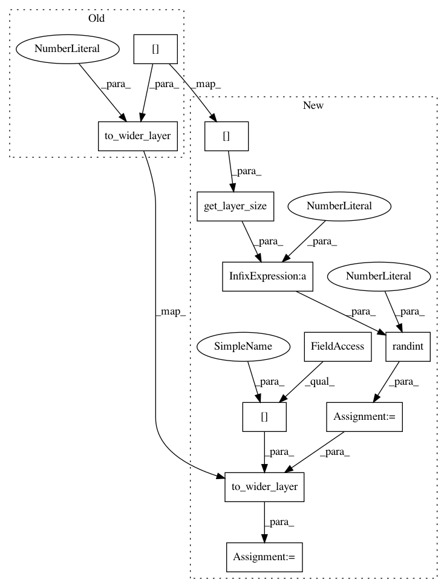

b3d68ab16b2e33cc483955841902794487819a5a,autokeras/net_transformer.py,,to_wider_model,#Any#Any#,69
Before Change
def to_wider_model(model, level):
next_wider_layer, ind = get_next_dense_conv(level, model.layers)
new_wider_layer, new_next_wider_layer = to_wider_layer(model.layers[level], next_wider_layer, 1)
return replace_layers(model, [level, ind], [new_wider_layer, new_next_wider_layer])
def transform(model):
After Change
def to_wider_model(model, level):
next_wider_layer, ind = get_next_dense_conv(level, model.layers)
n_size = get_layer_size(model.layers[level])
n_add = randint(1, 4 * n_size)
new_wider_layer, new_next_wider_layer = to_wider_layer(model.layers[level], next_wider_layer, n_add)
return replace_layers(model, [level, ind], [new_wider_layer, new_next_wider_layer])
def transform(model):
In pattern: SUPERPATTERN
Frequency: 4
Non-data size: 11
Instances
Project Name: jhfjhfj1/autokeras
Commit Name: b3d68ab16b2e33cc483955841902794487819a5a
Time: 2017-12-27
Author: jhfjhfj1@gmail.com
File Name: autokeras/net_transformer.py
Class Name:
Method Name: to_wider_model
Project Name: jhfjhfj1/autokeras
Commit Name: b2f7a3c58cfab22a50ebd7e48d8c16c8b0ccb742
Time: 2017-12-27
Author: jhfjhfj1@gmail.com
File Name: autokeras/net_transformer.py
Class Name:
Method Name: to_wider_model